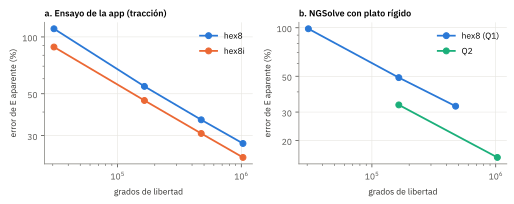
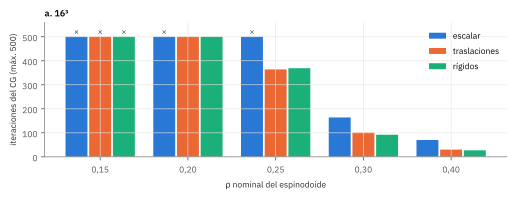
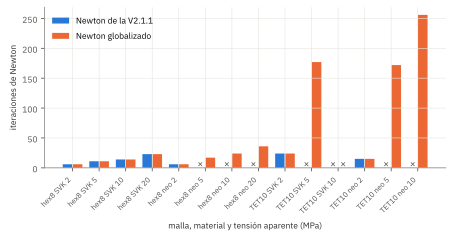
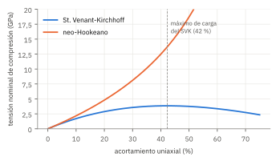
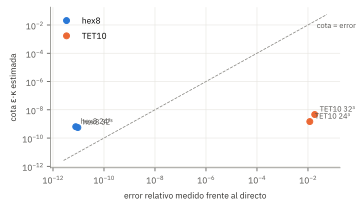
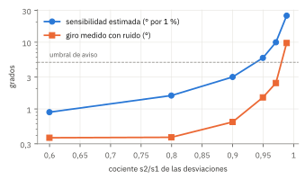
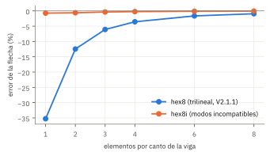

La revisión de los 23 textos de la biblioteca del grupo (docs/revision_libros/REVISION_LIBROS.md) produjo 17 propuestas para spinpy. Este informe recoge las siete que se pudieron implementar y medir en esta fase: dos en el resolvedor lineal, dos en el análisis no lineal, dos en el elemento de la malla de vóxeles y una en la orientación del recorte.
Cada cambio se probó contra una referencia propia (solución cerrada, resolvedor directo o extrapolación con la geometría fija) y se compara con el comportamiento de la V2.1.1. Los cambios están en una rama de trabajo y no se ha abierto ninguna solicitud de integración: el informe está pensado para decidir cuáles se integran.
claude/fem-numerical-analysis-books-objtncCuatro de los siete cambios mejoran la aplicación y se proponen para integrar; de ellos, solo el del material cambia resultados por omisión. Dos cambian el elemento de la malla de vóxeles y reducen de forma medible el error de discretización, pero modifican el problema discreto validado, por lo que se proponen como opción y como experimento. El séptimo, una cota del error del iterativo, no detecta el error que debía detectar y se descarta.
| Código | Cambio | Dónde | Resultado medido | Propuesta |
|---|---|---|---|---|
| C1 | Modos rígidos en el multigrid de la homogeneización y LU de respaldo | elastic.homogeneizar | Iteraciones −44 % (ρ 0,30) y −61 % (ρ 0,40); converge hasta ρ 0,20; por debajo, tensor del LU | Integrar |
| C2 | Newton globalizado: búsqueda lineal y corte de carga solo si Newton diverge | motores/m_ngsolve.py | Mismas iteraciones donde Newton ya convergía; converge en ⟦C2_NUEVOS⟧ casos donde fallaba | Integrar |
| C3 | Neo-Hookeano como material no lineal por omisión | fem.py, GUI | A 10 % de acortamiento local, SVK da un 21 % menos de tensión; su carga cae a partir del 42 % | Integrar |
| C4 | Cota del error del iterativo con κ estimado en el CG | solo en p4_cota_error.py | No detecta el error: en TET10 la cota fue de 10⁻⁹ con un error medido del 1,2 al 1,8 % | Descartar |
| C5 | Aviso de ejes PCA mal definidos al recortar | voi.estabilidad_pca, GUI | Sensibilidad estimada ordena bien el giro medido (0,4° a 9,7°) | Integrar |
| C6 | Hexaedro con modos incompatibles (hex8i) | elastic.hex8_ke | Flexión: −35/−12 % → −0,7/−0,6 %; espinodoide: error +110 % → +88 % | Opción |
| C7 | Hexaedros cuadráticos (Q2) de NGSolve sobre los vóxeles | motores/m_ngsolve.py | Mismo error que el trilineal con 2,9 veces menos GDL y 2,4 veces menos memoria | Experimental |
Las tres acciones con mejor relación entre beneficio y esfuerzo son C1, C2 y C3: tocan pocas líneas, no cambian ningún resultado que ya convergía y amplían el rango de casos que la aplicación resuelve (homogeneización de estructuras poco densas y ensayos no lineales con fuerza impuesta). C3 sí cambia los números no lineales por omisión y debe declararse en las notas de versión. El hallazgo más importante para la interpretación de resultados no es un cambio sino una medida: con la geometría fija, la rigidez del espinodoide a 24³ (1,2 vóxeles por espesor trabecular) está al doble del límite de su propia malla de vóxeles, y ningún elemento lo corrige del todo.
Un número de spinpy, por ejemplo el módulo aparente de un VOI, sale de una cadena de pasos: orientar y recortar el volumen, mallarlo con vóxeles, asignar el material, resolver uno o varios sistemas lineales (dentro de un Newton si el análisis es no lineal) y resumir el campo. Cada cambio de este informe actúa en un eslabón distinto, y por eso cada uno necesita una prueba distinta (Figura 1).
Tres cambios (C1, C2, C4) son de resolución: no alteran el problema discreto, solo la forma de resolverlo. Su prueba es que den la misma solución que antes donde antes había solución, y que la den también donde antes no la había o no se sabía si era fiable.
Los otros cuatro cambian el problema: el material (C3), el elemento (C6, C7) o la orientación del recorte (C5, solo como aviso). Para ellos la prueba es una referencia independiente del cambio: una solución cerrada, una referencia con refinamiento a geometría fija o un experimento sintético.
Todos los ensayos usan el espinodoide de referencia de la comparativa de motores (ρ = 0,30, número de onda 12π, 700 ondas, conos 30, 30 y 90°, semilla 1, 5 mm de lado) o espinodoides isótropos de la misma familia, con E = 20 GPa y ν = 0,3. Ninguno usa VOIs reales, que no viajan con el repositorio. Como control, las variantes nuevas se corrieron también en casos con solución conocida: el bloque macizo con plato (fuerza de la solución cerrada a 10⁻¹²) y el Laplaciano 2D (κ exacto).
| Guion | Cambio | Caso | Referencia |
|---|---|---|---|
p1_homogeneizacion.py | C1 | Espinodoide isótropo, ρ 0,15 a 0,40, 16³ y 24³ | LU directo |
p2_newton.py | C2 | Bloque macizo con plato; espinodoide 24³ hex8 y TET10 con fuerza en un incremento | Solución cerrada; Newton de la V2.1.1 |
p3_material.py | C3 | Compresión uniaxial homogénea | Solución cerrada de los dos materiales |
p4_cota_error.py | C4 | Espinodoide 24³ y 32³, hex8 y TET10, scikit-fem iterativo | NGSolve directo |
p5_pca.py | C5 | Elipsoides de semiejes (1, b, 0,5), b 0,6 a 0,99 | Giro con ruido de segmentación |
p6_flexion.py | C6 | Viga en voladizo de vóxeles, 1 a 8 elementos de canto | Richardson con hex8i fino; Euler-Bernoulli |
p6_espinodoide.py | C6 | Espinodoide a 24³ (y 40³) subdividido en m³ subvóxeles | Extrapolación con geometría fija |
p7_hex_orden2.py | C7 | El mismo, con NGSolve y plato rígido | Extrapolación con geometría fija |
Al subir la resolución del generador cambia la estructura, porque cada vóxel vuelve a clasificarse como hueso o vacío. Para medir solo el error del elemento, la máscara se genera una vez y cada vóxel se divide en m³ subvóxeles: la geometría es idéntica y solo cambia la discretización. El límite E∞ se estima ajustando E = E∞ + C·hp a las mallas más finas. Ese límite es el de la malla de vóxeles, escalera y uniones por arista incluidas, no el del hueso.
Un iterativo que para por residuo garantiza ‖r‖/‖b‖ ≤ ε, pero el error relativo de la solución solo queda acotado por ε·κ, donde κ es el número de condición (Quarteroni et al., §4.6.2). Con precondicionador se usa el residuo precondicionado y el κ del operador precondicionado. κ se estima con los coeficientes del propio CG, por lo que la cota es optimista: κ estimado ≤ κ verdadero.
Antes de las fichas conviene ver la magnitud que más pesa en los resultados de spinpy. La Figura 2 muestra el error de la rigidez aparente del espinodoide a 24³ frente a los grados de libertad, con la geometría fija, para los tres elementos probados. A esa resolución hay 1,2 vóxeles por espesor trabecular, un valor bajo pero representativo: los VOIs reales a 40³ quedaron entre 1,3 y 2,8 (INFORME_VOIS_REALES.pdf).

Cada punto es un ensayo; más a la derecha, más fina la malla. Una recta en escala logarítmica indica un orden de convergencia constante; su pendiente medida es cercana a 1 en las cuatro series (p ≈ 1,0), la mitad de lo que daría una solución suave. Bajar una serie respecto de otra a igual abscisa significa menos error con el mismo coste. A la resolución de trabajo (m = 1), el error es del +110 % con hex8: la rigidez sale al doble del límite de su propia malla.
El orden 1 indica que domina un error que ningún elemento corrige del todo: las aristas y vértices de la escalera de vóxeles y las uniones por arista entre vóxeles (artefacto A5 del informe de artefactos), cuya rigidez tiende a cero al refinar. Bevill y Keaveny ya señalaron que, con elementos grandes, pueden aparecer errores de convergencia importantes en las predicciones de resistencia de núcleos trabeculares1. Los dos elementos nuevos reducen el error a igual coste, pero no cambian el orden.
elastic.homogeneizar construía el multigrid algebraico sin espacio casi nulo, de modo que pyamg usaba el vector constante de un problema escalar. Ahora recibe las tres traslaciones y las tres rotaciones de cada nodo (espacio_nulo="rigidos"), como ya hacía el ensayo de compresión. Si aun así el CG no converge y el sistema tiene hasta 45 000 GDL, se repite con el LU directo y se declara.
El multigrid funciona porque el suavizador elimina el error oscilante y la malla gruesa el suave, de baja energía (Dolean y Tabeart, §6.3; Brenner y Scott, cap. 6)2,3. En una estructura poco conectada, los modos de menor energía son movimientos casi rígidos de cada trabécula; si el espacio grueso no los representa, el CG se estanca. El ensayo de compresión ya documentaba ese fallo (resistencia.py), pero el arreglo no había llegado a la homogeneización.
A 16³, con el espacio escalar de la V2.1.1 el iterativo no alcanzó el criterio de la app (residuo ≤ 10⁻⁶) en ρ = 0,15, 0,20 y 0,25. Con los modos rígidos convergió desde 0,20 y redujo las iteraciones de 164 a 92 (ρ 0,30) y de 70 a 27 (ρ 0,40), con el mismo tensor que el LU (diferencia de 2·10⁻⁹ a ρ 0,20 y ≤ 5·10⁻¹² desde ρ 0,25). A ρ = 0,15 ninguna variante converge en 500 iteraciones y el LU sí, en 12 s: con el respaldo, la función devuelve ese tensor en lugar de un error. ⟦C1_N24⟧
Trabéculas unidas por cuellos finos: girar una cuesta casi nada de energía, y el multigrid debe poder representarlo.

Integrar el espacio casi nulo rígido como opción por omisión. No cambia ningún tensor que ya convergía (a ρ 0,30 y 0,40, diferencias de 10⁻¹⁵ frente al LU con las dos variantes).
Integrar el respaldo LU. Su coste es el de las iteraciones fallidas (unos 125 s a 16³) más el LU; convendría cortar antes el CG cuando el residuo deja de bajar.
El motor NGSolve resolvía cada incremento de carga con Newton completo y, si no convergía en 30 iteraciones, el ensayo fallaba. Por omisión la app usa un solo incremento. Ahora: (1) se intenta Newton completo, igual que antes; (2) si diverge, se repite el incremento con búsqueda lineal (se acepta el paso si baja la energía potencial, o si no, el residuo; se rechaza si algún elemento se invierte); (3) si tampoco converge, se divide la carga por la mitad, hasta diez veces. Se registra cuántas veces la dirección de Newton no fue de descenso, señal de tangente no definida positiva.
Bathe señala que, con la tangente exacta, «el procedimiento principal para alcanzar la convergencia es reducir el incremento de carga», y que la búsqueda lineal «puede evitar la divergencia» (§8.4.1 y §8.4.2, pp. 758 y 761)4. Nocedal y Wright dan las condiciones de la búsqueda sobre la energía (cap. 3)5. Una primera versión con búsqueda lineal siempre activa ralentizó casos que Newton completo resolvía (TET10 a 20³: 119 iteraciones frente a 19), y por eso la búsqueda solo entra cuando Newton completo falla.
En el bloque macizo, la fuerza coincide con la solución cerrada a 4·10⁻¹² (SVK) y 8·10⁻¹³ (neo-Hookeano), como antes. En el espinodoide a 24³ con fuerza en un incremento, los cuatro casos SVK de hex8 (2 a 20 MPa) dan las mismas iteraciones y el mismo desplazamiento que la V2.1.1. Con neo-Hookeano, el Newton de la V2.1.1 falla a 5, 10 y 20 MPa (el paso completo invierte elementos y log J deja de estar definido); el globalizado converge en los tres, sin cortar la carga. ⟦C2_TET10⟧
El paso completo puede salir del dominio del material (J ≤ 0); recortarlo devuelve a una zona donde Newton converge.

Integrar con globalizar=True por omisión. Donde Newton completo convergía, el resultado y el número de iteraciones son los mismos; globalizar=False reproduce la V2.1.1.
Mostrar en el informe el recuento de tangentes no definidas. Un valor distinto de cero indica inestabilidad estructural (pandeo de trabéculas) más que un fallo numérico (Gelfand y Fomin, cap. 5)6.
El material por omisión de los análisis no lineales pasa de St. Venant-Kirchhoff (SVK) a neo-Hookeano en la API (fem.ensayo, fem.analizar), la línea de comandos y las dos ventanas de la interfaz. SVK sigue disponible. El diálogo guarda ahora la clave del material y no su posición en la lista, para que una sesión antigua no cambie de material sin avisar.
El SVK es la generalización directa de la ley de Hooke a grandes desplazamientos y es adecuado con rotaciones grandes y deformaciones pequeñas (Bathe, §6.6.1)4, pero «no es estable en compresión»: su energía no diverge cuando J → 0 (Kamensky, §4.3.4)7. El neo-Hookeano es policonvexo, la propiedad que garantiza la existencia de minimizadores en elasticidad no lineal (Dacorogna, §3.5)8.
Con las soluciones cerradas de la comparativa (Figura 5), los dos materiales coinciden a pequeña deformación, pero a un 5 % de acortamiento SVK da un 11 % menos de tensión, a un 10 % un 21 % menos, y a partir del 42 % su carga disminuye. En un ensayo no lineal la deformación aparente es pequeña, pero en los cuellos de las trabéculas la local puede no serlo: en el espinodoide a 20 MPa el desplazamiento del techo difirió un 5 % entre los dos materiales.

comparativa_motores/comun.py. La línea discontinua marca el máximo de carga del SVK, λ = 1/√3.Integrar y declararlo en las notas de versión. Cambia los números no lineales por omisión; la comparativa de motores verificó los dos materiales frente a su solución cerrada. SfePy, que solo resuelve SVK, queda fuera del no lineal salvo que se elija SVK.
Un CG precondicionado propio (gc_lanczos) que guarda los coeficientes α y β, forma con ellos la matriz tridiagonal de Lanczos, estima κ del operador precondicionado y declara la cota εP·κ junto al residuo. Se probó sustituyendo el resolvedor de scikit-fem desde el guion del estudio; no se integró en la aplicación.
El informe de motores encontró que el CG + pyamg de scikit-fem se detenía en el residuo pedido con un error de desplazamiento del 0,9 % en las mallas TET10, y que el residuo, por sí solo, no lo detectaba. La cota ‖e‖/‖x‖ ≤ ε·κ es la que da Quarteroni et al. (§4.6.2, p. 174)9, y la relación entre CG y Lanczos permite estimar κ sin coste adicional (§4.4 y §5.11).
En el Laplaciano 2D de 60 × 60 el κ estimado coincidió con el exacto (1507,4), y en las mallas hex8 del espinodoide la cota (6·10⁻¹⁰) quedó por encima del error medido (8·10⁻¹² a 9·10⁻¹²), como debe. Pero en las mallas TET10, el caso que motivó la propuesta, falló por siete órdenes de magnitud: a 24³ el error medido frente al directo fue del 1,2 % (0,5 % en el desplazamiento máximo) y la cota, 1,5·10⁻⁹; a 32³, 1,8 % (0,89 %, el valor del informe de motores) frente a 4,6·10⁻⁹. El κ estimado (unos 2000) no ve los modos de energía casi nula que produce el error: el CG los alcanza tarde y Lanczos solo aproxima los autovalores que el CG ya ha explorado.

No integrar la cota. Un campo que dice «error ≤ 10⁻⁹» cuando el error es del 1 % es peor que no tenerlo.
Con TET10, no usar el iterativo de scikit-fem o declarar su resultado como no fiable en la tabla de motores, que es la conclusión del informe de motores y aquí se confirma. Una cota útil exigiría estimar el menor autovalor por separado (por ejemplo, con un método de bloque precondicionado), con un coste del orden de la propia resolución.
Nueva función voi.estabilidad_pca que, a partir de las proyecciones del marco PCA, calcula cuántos grados giraría cada eje por un 1 % de cambio de la covarianza. La ventana de recorte añade una nota al VOI cuando el eje 1 o el 2 superan 5° por 1 %. El recorte no cambia.
La descomposición de la covarianza es única, salvo el signo, solo si sus autovalores son simples (Modersitzki, cap. 5)10. El condicionamiento de un autovector es la inversa de la distancia a los demás autovalores (Quarteroni et al., propiedad 5.5, p. 190)9. Si dos varianzas casi coinciden, la orientación del recorte depende del ruido de segmentación.
En elipsoides de 80³ con ruido gaussiano en la segmentación, el giro medido del eje principal creció con la sensibilidad estimada: 0,4° con s2/s1 = 0,60 y 9,7° con 0,99 (Figura 7). El umbral de 5 °/% corresponde a s2/s1 ≈ 0,95. El giro medido fue de 0,2 a 0,4 veces la sensibilidad, de modo que el umbral es provisional: falta calibrarlo moviendo el umbral de segmentación en VOIs reales.

Integrar como aviso y calibrar el umbral con VOIs reales. No cambia ningún recorte.
elastic.hex8_ke(..., elemento="hex8i") añade al trilineal los nueve modos incompatibles de Wilson y Taylor (1 − ξ², 1 − η², 1 − ζ² en cada componente) y los condensa estáticamente. La matriz sigue siendo 24 × 24 y el número de incógnitas no cambia. El ensayo de la app y la homogeneización aceptan elemento="hex8i"; por omisión siguen con hex8.
El trilineal no puede curvarse dentro del elemento: en flexión introduce deformaciones de corte espurias y resulta demasiado rígido (Zienkiewicz et al., §9.8; Reddy, §9.4)11,12. En cubos el jacobiano es constante, la integral de la matriz B de los modos es nula y el elemento pasa la prueba de la parcela sin corrección (Bathe, ejemplo 4.28)4. En el centroide las derivadas de los modos valen cero, así que la tensión se calcula igual.
Seis modos rígidos y prueba de la parcela exactos (10⁻¹⁶). En un voladizo de vóxeles, el error de la flecha con 1 y 2 elementos de canto pasa del −35 % y −12 % al −0,7 % y −0,6 % (Figura 8). En el espinodoide a 24³, el beneficio es menor: el error del E aparente baja del +110 % al +88 % con m = 1, el equivalente a refinar 1,24 veces sin coste. ⟦C6_40⟧
En flexión, el trilineal solo puede inclinar sus caras; los modos 1 − ξ² le permiten curvarse.

Integrar como opción, sin cambiar el valor por omisión. Cambia el problema discreto validado frente a FEBio; antes de hacerlo omisión hay que repetir la validación con la referencia embebida y con VOIs reales.
El adaptador de NGSolve acepta orden_hex=2 en el problema y resuelve la misma malla de vóxeles con hexaedros jerárquicos de orden 2. No hace falta superficie suavizada, tetgen ni corrección de volumen. Todavía no se usa desde fem.ensayo: el postproceso de tensiones de hex8 supone campo trilineal.
Šolín et al. construyen elementos jerárquicos de orden arbitrario sobre el hexaedro de referencia (§2.2.4) y su condensación estática (§3.5.9)13. La malla suave TET10 tiene tres problemas medidos en VOIs reales: memoria a 48³, astillas y una superficie que tetgen no pudo tetraedralizar.
En el espinodoide a 24³ con plato rígido (Figura 2b), Q2 con m = 1 (164 946 GDL, 0,7 GB) dio 359,4 MPa, prácticamente lo mismo que el trilineal con m = 3 (474 414 GDL, 1,7 GB): 2,9 veces menos incógnitas y 2,4 veces menos memoria para el mismo error (+33 % frente a E∞). A igual número de GDL que el trilineal con m = 2, Q2 tuvo un error del +33 % frente al +49 %.
Dejarlo como experimento hasta completar dos piezas: el postproceso de tensiones para Q2 (evaluar el campo del motor en el centroide, como ya se hace con TET10) y la comparación de memoria con TET10 a 40³ y 48³ en VOIs reales.
Robusto. Los dos cambios de resolución que se integran (C1, C2) se comportan como se esperaba: la misma solución donde antes la había, y solución donde antes no. El tercero (C4) es un resultado negativo útil: la cota con κ estimado no detecta el error que más importa. El cambio de material (C3) está justificado por una propiedad matemática del SVK que se ve en la solución cerrada. El aviso de PCA (C5) ordena bien los casos aunque su umbral sea provisional.
Menos robusto. Los dos elementos (C6, C7) reducen el error a igual coste, pero con la geometría fija la convergencia es de orden 1 y el límite de la malla de vóxeles sigue lejos a la resolución de trabajo. Ese límite incluye la escalera y las uniones por arista, que no existen en el hueso, de modo que «menos error de discretización» no equivale a «más cerca del hueso». Todos los ensayos son sobre espinodoides sintéticos.
La medida más relevante de este informe para el uso de la aplicación es la de la Sección 3: a 1,2 vóxeles por espesor trabecular, la rigidez del ensayo de la app está al doble del límite de su propia malla. Es coherente con la recomendación del informe de VOIs reales (Tb.Th/h ≥ 4) y le pone cifra.
| # | Acción | Cambio | Dónde en el código | Esfuerzo |
|---|---|---|---|---|
| 1 | Integrar los modos rígidos y el respaldo LU en la homogeneización | C1 | elastic.homogeneizar, _espacio_nulo | Bajo |
| 2 | Integrar el Newton globalizado | C2 | motores/m_ngsolve.resolver | Bajo |
| 3 | Neo-Hookeano por omisión, con nota de versión | C3 | fem.ensayo, fem.analizar, CLI, GUI | Bajo |
| 4 | Con TET10, no usar el iterativo de scikit-fem o marcarlo como no fiable (la cota de C4 se descarta) | C4 | motores/m_skfem.resolver | Bajo |
| 5 | Aviso de ejes PCA y calibración del umbral | C5 | voi.estabilidad_pca, recorte en la GUI | Bajo |
| 6 | hex8i como opción; validar con FEBio y la referencia embebida antes de hacerlo omisión | C6 | elastic.hex8_ke, resistencia.ensayo_compresion | Medio |
| 7 | Postproceso de tensiones para Q2 y comparación de memoria con TET10 | C7 | motores/m_ngsolve, fem.tension_elemental | Medio |
Desde la raíz del repositorio, con pip install -e ".[elastico,fem,malla,test,informe]". Tiempos en un equipo de 4 núcleos y 15 GB:
python comparativa_motores/libros/p1_homogeneizacion.py 16 # ~15 min python comparativa_motores/libros/p1_homogeneizacion.py 24 # ~1 h python comparativa_motores/libros/p2_newton.py bloque espinodoide tet10 # ~40 min python comparativa_motores/libros/p3_material.py # segundos python comparativa_motores/libros/p4_cota_error.py 24 32 # ~10 min python comparativa_motores/libros/p5_pca.py # ~1 min python comparativa_motores/libros/p6_flexion.py # segundos python comparativa_motores/libros/p6_espinodoide.py 24 # ~15 min P6_MS=1,2 python comparativa_motores/libros/p6_espinodoide.py 40 python comparativa_motores/libros/p7_hex_orden2.py 24 # ~2 min python comparativa_motores/libros/figuras_libros.py python -m pytest tests/test_31_revision_libros.py # bloque 31
Diseño del trabajo. Estudio computacional de verificación de código y de cálculo, con comparación frente a referencias numéricas y analíticas; sin sujetos ni datos experimentales, de modo que PRISMA, CONSORT y STROBE no son aplicables. Se usa la guía específica de Erdemir et al. (2012) para estudios de elementos finitos en biomecánica14, la misma de los informes anteriores de spinpy; no consta una versión posterior que la sustituya.
| Ítem | Contenido | Estado | Modificación necesaria |
|---|---|---|---|
| Identificación del modelo | |||
| 1 | Tipo de modelo, propósito y magnitudes de interés | Cumple | Portada y secciones 1 y 2. |
| 2 | Versión del software y del código | Cumple | Portada (commit base y rama). |
| Estructura del modelo | |||
| 3 | Geometría y su origen | Parcial | Espinodoides sintéticos descritos por sus parámetros; falta repetir con VOIs reales. |
| 4 | Malla: tipo, tamaño, número de elementos | Cumple | Sección 2 y fichas (GDL de cada ensayo). |
| 5 | Propiedades del material | Parcial | E = 20 GPa y ν = 0,3, SVK y neo-Hookeano; falta justificar el módulo de tejido con bibliografía. |
| 6 | Condiciones de contorno y cargas | Cumple | Sección 2 y fichas. |
| 7 | Interacciones y contacto | No aplica | Sin contacto (R10 queda pendiente). |
| Estructura de la simulación | |||
| 8 | Resolvedor y tolerancias | Cumple | Fichas C1, C2 y C4. |
| 9 | Postproceso y definiciones | Cumple | Sección 2 y glosario. |
| Verificación | |||
| 10 | Verificación del código | Cumple | Bloque 31 de la suite: soluciones cerradas, prueba de la parcela, κ exacto. |
| 11 | Verificación del cálculo (convergencia) | Parcial | Refinamiento con geometría fija en un espinodoide; la extrapolación de orden 1 es una estimación. |
| 12 | Sensibilidad | Parcial | Densidad (C1), carga (C2) y separación de ejes (C5); falta la sensibilidad a la resolución base en C6 y C7. |
| Validación | |||
| 13 | Comparación con datos experimentales | No cumple | Referencias numéricas y analíticas; declarado en Limitaciones. |
| Disponibilidad | |||
| 14 | Modelo, datos y código | Cumple | Scripts y resultados en comparativa_motores/libros/. |